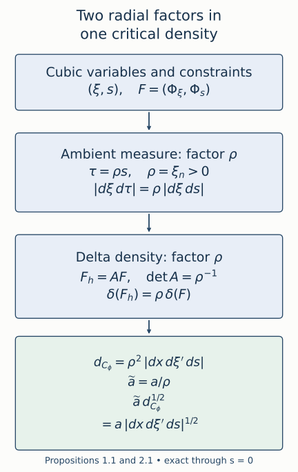

Fold amplitudes and critical densities
The two projection folds have already been put into an exact canonical model in Canonical relations with two folding projections. We now determine the amplitude order, Fourier constant and invariant half density of that model. We also prove that every distribution on the model, with the stated local support, has an amplitude independent of the input position and the first frequency.
We use the normalized oscillatory integrals of Oscillatory distributions and their order, the principal-symbol isomorphism of Gaussian lines, densities and invariant symbols, and the every-order regularity criterion of Recognizing a Lagrangian distribution intrinsically. Support-preserving symbol summation is imported from AN-03, Euclidean symbol calculus, §2, formula (E6). The primary source is the exact reprint of Hörmander IV, corrected second printing (1994), §25.3, printed pages 32–33 / PDF pages 43–44, especially formulas (25.3.7)–(25.3.8). All statements below use ordinary symbols Sr=S1,0r.
The proof map binds the full canonical model, normalized integrals, Gaussian symbol theorem, every-order regularity and Fourier calculus to exact earlier programme proofs. The earlier AN-03 summation label (E6), retained in the exercises, is supplied here by the complete support-preserving summation proof K1. That component retains its GFDL notices. The earlier phase-and-order companion also proves the radial order change; we retain the two-direction calculation here because it is needed for the density cancellation.
1. The model and the two amplitude conventions
Let n≥2, write ξ′=(ξ2,…,ξn), and put ρ=ξn>0. Our canonical relation is parametrized by (x,s,ξ′):
ξy1yn=η=(s2ρ,ξ′),=x1+s,yj=xj(2≤j<n),=xn−s3/3.(1.1)
The kernel Lagrangian is C′, with covectors (ξ,−η) over (x,y). In particular its base dimension is 2n, even though an operator acts on an n-dimensional space.
Use the convenient cubic expression
Φ(x,y,s,ξ)=(x−y)⋅ξ+sξ1−s3ρ/3.(1.2)
The variable s has degree zero. The actual homogeneous phase has degree-one auxiliary variables (ξ,τ), where τ=ρs:
ϕ(x,y,ξ,τ)=(x−y)⋅ξ+ρτξ1−3ρ2τ3.(1.3)
Its nondegeneracy, including at s=0, was proved in the preceding lesson.
Throughout a cubic amplitude is supported in a fixed compact set of (x,y,s), with ∣s∣≤S, and in a closed angular cone
ρ≥1,∣ξ∣≤Cρ.(1.4)
Bounds on all s and base derivatives are uniform. Thus a∈Sμ in these variables means
∣∂x,yβ∂sk∂ξαa∣≤Cαβkρμ−∣α∣.(1.5)
We work on a slightly larger cone when extending amplitudes. A cutoff at bounded frequency only contributes a smooth kernel.
Proposition 1.1 (the radial Jacobian and the order). The normalized kernel integral of order m is
Ka(x,y)=(2π)−n−1/2∬eiΦ(x,y,s,ξ)a(x,y,s,ξ)dsdξ,a∈Sm+1/2.(1.6)
Its meaning is the homogeneous oscillatory integral with phase (1.3) and amplitude
a(x,y,ξ,τ)=ρ−1a(x,y,τ/ρ,ξ)∈Sm−1/2.(1.7)
These two amplitude conditions are equivalent on the indicated compact parameter sets and cones.
Proof. For base dimension d=2n and N=n+1 homogeneous phase variables, the normalized prefactor and amplitude order are
(2π)−(d+2N)/4=(2π)−n−1/2,m+(d−2N)/4=m−21.(1.8)
At fixed ξ, dτ=ρds. Hence (1.7) gives precisely (1.6), with no change of the prefactor.
On its support, ∣τ∣≤Sρ and ∣(ξ,τ)∣≍ρ. To check all symbol derivatives, the first frequency derivatives of (1.7) are
∂τa∂ξja∂ρa=ρ−2as,=ρ−1aξj(j=n),=−ρ−2a+ρ−1aρ−sρ−2as.(1.9)
The last line differentiates at fixed τ. Each auxiliary derivative loses one order; a base derivative loses none. Repeatedly applying these identities gives every higher estimate from finitely many seminorms in (1.5). Factors that depend on s remain bounded, and differentiating them either introduces ρ−1 or takes another bounded s derivative.
Conversely,
a(x,y,s,ξ)=ρa(x,y,ξ,ρs).(1.10)
An s derivative introduces ρ∂τ, whose two effects cancel in the order. A ρ derivative at fixed s introduces ∂ρ+s∂τ; other frequency derivatives are unchanged. Derivatives of the leading ρ factor have the corresponding one-order loss. Induction proves (1.5) with μ=m+1/2. Angular cutoffs are order zero under these same differentiations. The normalized phase-integral theorem therefore gives Ka∈Im(R2n,C′). ∎
Counting s as a homogeneous frequency without changing the integration measure would miss an entire order. The change of variables and the normalized variable count must be used together.
2. Computing the critical density
For independent critical equations F=0, the positive critical density is
δ(F)∣d(base)d(auxiliary)∣.(2.1)
It is computed by choosing coordinates along the critical set and dividing the ambient coordinate density by the absolute normal Jacobian of F. This is the critical-density convention used in the principal-symbol theorem.
The delta notation has a direct coordinate meaning. Complete the independent constraint map F to coordinates (z,F) by the inverse theorem. In those coordinates integrate a compact test against the ambient density, then evaluate its normal variable at zero. The remaining coefficient is precisely the ambient Jacobian at F=0. If the constraints change to M(z,F)F, their normal differential at F=0 is M(z,0); the terms differentiating M vanish because they multiply F. Ordinary change of variables therefore divides the critical density by ∣detM(z,0)∣. This also proves the rule when M depends on the coordinates.
First use the nonhomogeneous variables of (1.2). With
F=(Φξ1,…,Φξn,Φs),(2.2)
choose tangential coordinates (x,ξ′,s) and normal coordinates (y,ξ1). The first n rows have y derivative −In. The final row is ξ1−s2ρ and has ξ1 derivative one and no y derivative. Thus the absolute normal determinant is one, and
dCΦ=∣dxdξ′ds∣.(2.3)
This is a calculation with independent constraints; it does not treat Φ as a homogeneous phase.
Proposition 2.1 (two radial factors). In the same critical coordinates,
dCϕ=ρ2∣dxdξ′ds∣.(2.4)
Consequently
a∣CϕdCϕ1/2=a∣CΦ∣dxdξ′ds∣1/2.(2.5)
Proof. At fixed τ, put s=τ/ρ. The homogeneous critical equations satisfy the exact identities
ϕξjϕρϕτ=Φξj(j=n),=Φρ−ρsΦs,=ρ−1Φs.(2.6)
The constraint change from F to Fh=(ϕξ,ϕτ) has determinant ρ−1. Meanwhile the ambient change (ξ,s)↦(ξ,τ) has determinant ρ. Delta density therefore contributes one factor ρ, and ambient measure contributes another. This proves (2.4).
One can also calculate directly. Use tangential coordinates (x,ξ′,τ) and the same normal coordinates (y,ξ1). The normal determinant of Fh has absolute value 1/ρ. Hence
dCϕ=ρ∣dxdξ′dτ∣=ρ2∣dxdξ′ds∣.(2.7)
In the last equality, dτ=ρds+sdρ; the dρ term vanishes in the density Jacobian because ρ is already among ξ′. Taking the positive square root and using a=a/ρ proves (2.5). ∎

Figure 2.1. The ambient measure change supplies ρ, and the inverse constraint determinant supplies ρ. Their product gives the critical density (2.4). Its square root cancels the amplitude factor ρ−1 in (1.7). Every arrow is an exact change of variables, including at the fold. See Propositions 1.1 and 2.1.
3. Restriction and the invariant symbol
Restrict the cubic amplitude to the whole critical set:
ac(x,s,ξ′)=a(x,(x1+s,x2,…,xn−1,xn−s3/3),s,(s2ρ,ξ′)).(3.1)
The order here is measured in ξ′, with bounded s derivatives.
Proposition 3.1. If a∈Sm+1/2 in (1.5), then ac∈Sm+1/2 in (x,s,ξ′). In the Maslov frame supplied by ϕ, the principal symbol of Ka is represented by
ac(x,s,ξ′)∣dx∣1/2∣dξ′∣1/2∣ds∣1/2modSm+n/2−1.(3.2)
The displayed half density has total order m+n/2.
Proof. The substitution in (3.1) is homogeneous in ξ′. A ξ′ derivative takes frequency derivatives of a, with coefficients of order zero. Differentiating ξ1=s2ρ with respect to s gives 2sρ, whose order one compensates the loss from ∂ξ1a. Derivatives of the substituted positions are bounded. The same calculation iterated proves every mixed estimate. The restriction stays in a fixed larger angular cone because s is bounded.
The fixed-phase principal-symbol formula is a∣CϕdCϕ1/2 in its phase frame. Proposition 2.1 gives exactly (3.2). Under dilation, x and s have degree zero, while ξ′ has n−1 degree-one coordinates. The positive frame in (3.2) therefore has degree (n−1)/2. Its sum with the scalar order m+1/2 is m+n/2, which is the principal-symbol order for a kernel with base dimension 2n. Quotienting by one lower kernel order gives the remainder in (3.2). ∎
The corresponding homogeneous calculation is
(m−21)+2n+1=m+2n.(3.3)
Both calculations agree. The density is nonsingular at s=0; the vanishing Jacobian of either projection in (1.1) is a different object.
4. A phase with fewer variables
Write δ=y1−x1. Define the homogeneous phase in n−1 variables
Ψ(x,y,ξ′)=j=2∑n(xj−yj)ξj−3δ3ρ.(4.1)
Its critical equations are
xj=yj (2≤j<n),xn−yn=δ3/3.(4.2)
Their y2,…,yn derivatives form −In−1, so the phase is nondegenerate on ρ>0. On its critical set,
Ψx=(δ2ρ,ξ′),−Ψy=(δ2ρ,ξ′).(4.3)
Thus it parametrizes the same whole relation, with s=δ, and its critical density is
dCΨ=∣dxdδdξ′∣.(4.4)
The full phase differential is nonzero since Ψyn=−ρ=0. The independent critical equations define a smooth set of dimension 2n. Its map to the relation is an embedding: its smooth inverse recovers x,δ=y1−x1,ξ′ from the two base points and their covectors. Formula (1.1) then recovers every critical point, on both signed sheets and at the fold.
For (4.4), use tangential coordinates (x,y1,ξ′), the normal variables y2,…,yn, and then y1=x1+δ, whose tangential Jacobian is one.
Lemma 4.1 (exact hyperbolic elimination). The two phase frames agree. On a local conic neighborhood of the critical set, the change
uv=τ−ρδ,=ξ1−ρδ2−δu−3ρu2(4.5)
is a degree-one auxiliary diffeomorphism of determinant one, and
ϕ=Ψ+ρuv.(4.6)
The additional phase block has signature zero.
Proof. At fixed ξ′ the inverse is
τ=u+ρδ,ξ1=v+ρδ2+δu+u2/(3ρ).(4.7)
Both directions are smooth on ρ>0 and preserve the degree-one auxiliary scaling. With the ordered pairs (ξ1,τ) and (v,u) the determinant is one; using (u,v) reverses its sign. Thus the density Jacobian is one in either ordering. Expansion of the cube in (1.3) gives (4.6) exactly. The added critical equations give u=v=0. At that set their Hessian block is
(0ρ−1ρ−10);(4.8)
its eigenvalues are ρ−1 and −ρ−1. Mixed Hessian entries with ξ′ vanish there. The positive Gaussian determinant factor is ρ, and the signature phase is one. The fixed-phase transition law therefore identifies the two Maslov frames, with no phase rotation. The density and amplitude cancellation is already (2.5). ∎
For a coefficient b(x,s,ξ′) independent of y and ξ1, Fourier inversion gives the particularly useful exact identity
Kb(x,y)=(2π)−n−1/2∬eiΦ(x,y,s,ξ)b(x,s,ξ′)dsdξ=(2π)−n+1/2∫eiΨ(x,y,ξ′)b(x,δ,ξ′)dξ′.(4.9)
The first line is understood as an iterated distributional integral: integrating ξ1 produces 2πδ0(s−δ). The second line is a standard homogeneous phase integral. Its amplitude order is
m+42n−2(n−1)=m+21,(4.10)
and its prefactor is the one displayed in (4.9). Pairing with a compact smooth test function, Fourier inversion in s−δ, and the defining remaining oscillatory integral justify the identity. If compact base support is needed, insert a smooth cutoff equal to one near the compact base image of the critical support. Removing that cutoff changes only a smooth kernel.
For a direct distributional justification, fix a compact smooth test f(x,y) and first bound ξ′. After the change y1=x1+δ, the ξ1 integral is ordinary Fourier inversion in s−δ, giving exactly 2πf(x,x1+s,y′). The remaining y′ integral is a partial Fourier transform of a compact smooth function. Repeated integration by parts in y′ bounds it by every negative power of ⟨ξ′⟩, uniformly in the compact x,s sets and after every fixed x,s derivative. These bounds dominate the polynomial symbol growth of b, so the bounded-frequency restriction can be removed under the paired integral. This proves (4.9) with its stated iterated meaning and exact constant.
This calculation is valid through the fold: it never divides by s.
5. The omitted first-frequency cone is smooth
The first line of (4.9) does not have compact angular support in ξ1. We must justify comparing it with (1.6), rather than silently treating an amplitude constant in ξ1 as a symbol in all n+1 homogeneous variables.
Lemma 5.1 (the first-frequency tail). Suppose b(x,s,ξ′)∈Sμ, with compact x,s support, ∣s∣≤S, and
ρ≥1,∣ξ′∣≤C′ρ.(5.1)
Choose M>2S2 and a smooth χ equal to one for ∣t∣≤M and zero for ∣t∣≥2M. Then
T(x,ξ)=∫ei(sξ1−s3ρ/3)(1−χ(ξ1/ρ))b(x,s,ξ′)ds∈S−∞(x,ξ).(5.2)
It follows that inserting χ(ξ1/ρ) in the first line of (4.9) changes its kernel by a smooth function.
Proof. On the tail,
F=∂s(sξ1−s3ρ/3)=ξ1−s2ρ,∣F∣≥∣ξ1∣/2.(5.3)
Also ∣ξ∣≍∣ξ1∣, since ∣ξ′∣≤C′ρ≤(C′/M)∣ξ1∣. With L=(iF)−1∂s, Lei(sξ1−s3ρ/3)=ei(sξ1−s3ρ/3). Compact s support removes every boundary term. Each application of Lt=−∂s(⋅/(iF)) introduces one factor of order ∣ξ1∣−1. Indeed the derivatives ∂sF=−2sρ and ∂s2F=−2ρ are O(∣ξ1∣), and higher ones vanish. Repeated differentiation of F−1 therefore has the same order ∣ξ1∣−1, with bounds depending on the fixed s interval.
For any fixed set of base and frequency derivatives of (5.2), differentiating its exponential only inserts bounded powers of s and s3. Derivatives of the angular cutoff occur where ∣ξ1∣≍ρ, and have the usual frequency-order losses. Every derivative of b needed at a fixed stage is bounded by a constant times ρmax(μ,0), because ρ≥1. After N integrations by parts the resulting integrand is therefore bounded by
CαβN∣ξ1∣max(μ,0)−N(5.4)
on a fixed compact s interval. This also bounds its integral. Given any decay order and any finite derivative set, choose N larger than their required decay exponent plus max(μ,0). Thus all differentiated estimates of S−∞(x,ξ) hold.
The tail kernel is the inverse Fourier integral of (5.2), times the fixed normalization. Arbitrarily rapid decay permits all base derivatives under the integral, so it is smooth. The region of bounded ξ′, if it is present before the cutoff ρ≥1, is already smooth by the second line of (4.9); equivalently the compact s Fourier transform decays rapidly in ξ1. ∎
In particular the conically truncated amplitude
a(x,s,ξ)=χ(ξ1/ρ)b(x,s,ξ′)(5.5)
has the ordinary order μ on ∣ξ∣≤C′′ρ, including all s derivatives. At every critical point of its support, ξ1/ρ=s2 and χ=1. Propositions 1.1–3.1 therefore apply to the whole distribution (4.9), modulo its smooth tail.
6. Every local model kernel has a reduced amplitude
Here “compactly generated” means that the intersection with a frequency dilation slice lies in a compact subset of the stated coordinate chart. In the model parameters this gives a compact set of x,s and angular ξ′, with closure in ρ>0. Choose a slightly larger compact parameter set and cone, still inside the chart. All coefficients below may be supported there.
Theorem 6.1 (full reduced-amplitude representation). Let
A∈Im(R2n,C′)(6.1)
and suppose its entire wavefront set is contained in a compactly generated subset of the model chart, inside the preceding smaller set. Modulo a smooth kernel there is a coefficient
b(x,s,ξ′)∈Sm+1/2(6.2)
supported in the chosen larger compact parameter set and cone, for which A=Kb in (4.9). Equivalently, for compact smooth inputs and with
f(ξ)=∫e−iy⋅ξf(y)dy,
(Kbf)(x)=(2π)−n−1/2∬ei(x⋅ξ+sξ1−s3ρ/3)b(x,s,ξ′)f(ξ)dsdξ.(6.3)
The integral in (6.3) is absolutely convergent for these inputs. Its principal symbol is (3.2) with ac=b. Properly supported local versions are obtained by the base cutoff described after (4.9).
Proof. By (4.1)–(4.4), Kb is a nondegenerate phase integral of order m whenever b has order m+1/2. Its principal-symbol map, in the common phase frame, is
b⟼b∣dxdsdξ′∣1/2.(6.4)
This realizes every local symbol class of total order m+n/2. In fact dividing such a section by the positive frame gives an ordinary scalar symbol of order
(m+n/2)−(n−1)/2=m+1/2.(6.5)
The model parametrization is a diffeomorphism onto the relation, so this scalar coefficient is a smooth function of precisely (x,s,ξ′). No extension in additional base variables is needed.
Choose a representative b0 for the principal symbol of A, supported in the larger parameter set and rapidly decreasing, with all derivatives, on closed parameter cones disjoint from WF(A). These properties follow from the microlocal symbol construction: in the compact cosphere cover used for the principal-symbol theorem, take every localization inside that larger set. The coefficient in a frequency graph is extracted from the localized distribution's Fourier transform. Where the distribution is microlocally smooth, this coefficient and all its fixed derivatives are rapidly decreasing. The smooth changes of critical coordinates, density frames and Maslov frames preserve rapid decrease. A cutoff equal to one near the smaller wavefront set therefore discards only rapidly decreasing coefficients. The partition can be finite over the compact parameter support.
To make the rapid-decrease assertion explicit, use the compact microlocal cutoffs of K7 and the graph formula in the Gaussian lesson, Section 7. For a compactly supported localized distribution u, each derivative ∂ηαu is the Fourier transform of (−iz)αu. On a smaller closed regular cone it decreases faster than every power: the Fourier-cutoff proof W1 gives the same decay after multiplication by a compact smooth coefficient, and one such coefficient agrees with zα on the compact support. Multiplication by the graph phase eiH(η) preserves these estimates, since all its fixed derivatives have at most polynomial growth on a closed normalized cone. The smooth homogeneous critical-coordinate changes and the finite-order density factors preserve rapid decrease by the chain rule. Apply this to each member of a finite graph partition on the compact dilation slice and add the transported coefficients in the common frame. Off the original wavefront set every summand is rapidly decreasing. A fixed smooth cutoff equal to one on a neighborhood of that set therefore removes only a rapidly decreasing coefficient, with all derivatives; low frequencies give a smooth kernel. This proves the support assertion used at every residual step without assuming a principal symbol is a full symbol.
The phase wavefront theorem, applied after a partition into rapidly decreasing and nonstationary pieces, now gives WF(Kb0)⊂WF(A). The symbols agree, and the kernel assertion of the principal-symbol theorem gives
R1=A−Kb0∈Im−1.(6.6)
Its wavefront set is contained in WF(A).
Repeat this construction for the residual, choosing all coefficients in one fixed larger support set. Inductively there are
bj∈Sm+1/2−j,RN=A−j<N∑Kbj∈Im−N.(6.7)
At each step choose the coefficient with the same rapid-decrease property off the residual's wavefront set. The preceding phase wavefront argument then gives WF(RN)⊂WF(A) by induction. A single cutoff equal to one near that fixed wavefront set, supported in the chosen larger parameter box and cone, can therefore be used at every stage; every discarded coefficient is rapidly decreasing. This keeps the support set fixed without successive enlargement.
Apply the imported support-preserving asymptotic summation theorem to the symbols bj, with (x,s) as base parameters and ξ′ as frequency variables. Compact parameter support makes its usual uniform base seminorms applicable. It gives a symbol b supported in their common set with
b−j<N∑bj∈Sm+1/2−Nfor every N.(6.8)
The already proved phase-order formula places the corresponding K difference in Im−N. Combining with (6.7) shows
A−Kb∈N≥0⋂Im−N=C∞.(6.9)
The last equality is the every-order regularity result proved in the intrinsic lesson. More directly, its empty-word condition puts the localized remainder in Besov spaces of every order, hence in Sobolev spaces of every finite order; local Sobolev embedding gives smoothness.
Finally Fourier inversion in the first frequency, as in (4.9), identifies this Kb with its cubic integral, and integration against the input yields (6.3). A compact smooth input has a Schwartz Fourier transform, whereas b has polynomial growth and compact s support; absolute convergence follows. The first-frequency tail in Lemma 5.1 justifies the comparison with the conic n+1-variable representation. Thus both descriptions have the claimed order and the same invariant symbol. ∎
The argument proves representation for the entire local model class, rather than only for amplitudes initially written with ϕ. It uses the already established symbol theorem and asymptotic summation at every lower order. General stable equivalence of arbitrary phase functions is a separate theorem; it is not a premise of this particular construction.
7. Exact normalization examples
Take smooth compact cutoffs β(x) and γ(s), and an angular cutoff ω(ξ′/ρ), supported in a compact subset of the cone ρ>0. At high frequency set
b(x,s,ξ′)=β(x)γ(s)ω(ξ′/ρ)ρm+1/2.(7.1)
Include a smooth low-frequency cutoff in ρ. This is an ordinary symbol of the required order: derivatives of the angular ratios lose one frequency order, whereas x,s derivatives affect only compact smooth cutoffs.
Its reduced kernel is
(2π)−n+1/2∫eiΨ(x,y,ξ′)β(x)γ(y1−x1)ω(ξ′/ρ)ρm+1/2dξ′.(7.2)
Its symbol is (7.1) times the positive frame of (3.2). On any patch where the cutoffs are one this symbol is elliptic, including points with s=0. Ellipticity refers to its coefficient on the Lagrangian; neither projection needs to be invertible there.
For n=2 and m=−1/6, the scalar amplitude order is 1/3, the homogeneous 3-variable amplitude order is −2/3, and the symbol half-density order is 5/6:
31+21=65=−32+23.(7.3)
These orders are an illustration of the normalization. No continuity conclusion follows from these counts alone; the Airy estimates needed for the fold bound will be proved separately.
8. Exercises with complete solutions
Exercise 8.1 (kernel variable count; introductory). For n=3 and kernel order m=−1/4, compute the two amplitude orders, the two normalized prefactors, and the total symbol order.
Solution. The base dimension is six. The n+1=4 homogeneous variables give amplitude order −1/4−1/2=−3/4 and prefactor (2π)−7/2. In cubic coordinates the amplitude has order −1/4+1/2=1/4, with the same prefactor. The reduced phase has n−1=2 variables and prefactor (2π)−5/2, while its amplitude still has order 1/4. The frame ∣dxdsdξ′∣1/2 has degree one, so the symbol order is 1/4+1=5/4=m+n/2. In the homogeneous description the frame degree is two, giving −3/4+2=5/4.
Exercise 8.2 (a different radial coordinate; intermediate). Replace τ=ρs by τ=r(ξ)s, where r is positive, smooth and homogeneous of degree one on the cone, and r≍ρ. Determine the amplitude and critical-density changes without assuming r=ξn.
Solution. At fixed ξ, the measure changes by r, so a=a/r. At fixed τ, the frequency constraint vector becomes
Fh=(Φξ−rsrξΦs,rΦs).
The displayed constraint matrix has determinant 1/r. Its inverse delta Jacobian contributes r, while ambient measure contributes r. Thus dCh=r2dCΦ and adCh1/2=adCΦ1/2. Positivity fixes the square root. The comparability and homogeneous derivative bounds for r give the same symbol equivalence by the chain rule, since ∂ξ(τ/r)=−srξ/r has order −1, and ∂τ(τ/r)=r−1.
Exercise 8.3 (restriction with an s derivative; intermediate). For a general amplitude a(x,y,s,ξ), write ∂sac explicitly and explain why it has the same order as ac.
Solution. The chain rule on (3.1) gives
∂sac=(as+ay1−s2ayn+2sρaξ1)CΦ.
The first three derivatives have the original order, and their scalar coefficients are bounded on the fixed s interval. The frequency derivative has one lower order, which is restored by ρ. Hence the expression has order m+1/2. Higher s derivatives differentiate these same coefficients and substitutions; each additional frequency derivative is accompanied by at most the corresponding power of ρ, so the order remains unchanged.
Exercise 8.4 (a missing density factor; intermediate). An incorrect computation uses a=a/ρ but claims dCϕ=ρdCΦ. What coefficient does it assign to the symbol, and which Jacobian has it omitted?
Solution. It assigns aρ−1/2dCΦ1/2, which is one half order below the actual symbol. This is an error in the claimed symbol, rather than a change to the kernel already defined. It omits one radial factor: after computing the normal constraint determinant 1/ρ, the density is ρ∣dxdξ′dτ∣; replacing dτ by ρds supplies the second factor. Conversely an ambient-only calculation would omit the inverse constraint determinant. Both are required.
Exercise 8.5 (the reduced phase at the fold; intermediate). In dimension two, compute all base covector components and the critical density of Ψ=(x2−y2)ρ−(y1−x1)3ρ/3. Verify nondegeneracy at y1=x1.
Solution. With δ=y1−x1, the covectors are Ψx=(δ2ρ,ρ) and −Ψy=(δ2ρ,ρ). The sole critical equation is x2−y2−δ3/3=0. Its y2 derivative is −1, including at δ=0; its differential never vanishes. In critical coordinates (x1,x2,δ,ρ), the normal Jacobian is one, so the density is ∣dx1dx2dδdρ∣. The vanishing of the derivative of δ2ρ in the fold direction does not affect independence of this phase-critical equation.
Exercise 8.6 (the hyperbolic signature; intermediate). Verify the auxiliary inverse in (4.7), its determinant and its stationary Gaussian constant. Explain how it accounts for the prefactor difference in (4.9).
Solution. Substituting τ=u+ρδ into (4.5) gives u, and substituting the proposed ξ1 then gives v. At fixed ξ′ the inverse Jacobian in (v,u) has diagonal entries one and lower off-diagonal entry zero, hence determinant one. The quadratic block uv/ρ has determinant −ρ−2 and signature zero, so the real two-variable Gaussian factor is 2πρ. The homogeneous amplitude at u=v=0 is b/ρ. Their product is 2πb, changing (2π)−n−1/2 to (2π)−n+1/2. The phase factor is one, in agreement with the exact first-frequency Fourier inversion.
Exercise 8.7 (the tail requires a support hypothesis; advanced). In Lemma 5.1 take S=1 and M=3. Give a lower bound for ∣F∣ on the tail. Explain why the same argument fails for an amplitude whose s support is unrestricted.
Solution. On the tail ∣ξ1∣≥3ρ and s2ρ≤ρ, so ∣F∣≥∣ξ1∣−ρ≥2∣ξ1∣/3, which is stronger than (5.3). If s is unrestricted and ξ1>0, the stationary points s=±ξ1/ρ lie in the putative tail. There is then no denominator bound and integration by parts with 1/F is invalid there. Compact s support is what puts those stationary points outside the amplitude support when the first frequency is sufficiently large. The noncompact Airy integral needs its own tail argument with different support conditions.
Exercise 8.8 (a symbol-zero kernel; advanced). Suppose A∈Im(C′) has zero principal symbol. What does this imply, and why does it not immediately imply that A is smooth?
Solution. The kernel of the principal-symbol map is Im−1(C′), so only one order is lost. For example a reduced amplitude elliptic of order m−1+1/2 defines an element of Im−1 with a nonzero symbol at that lower order. It is also in Im with zero order-m symbol, yet it is not smooth: its lower-order elliptic symbol prevents membership in every smaller order. To obtain smoothness in Theorem 6.1, the residual must belong to Im−N for every N, not just N=1.
Exercise 8.9 (why the asymptotic sum uses fewer frequencies; advanced). Identify the base and frequency variables to which (E6) is applied in Theorem 6.1. Show that its remainder gives the desired kernel remainder order.
Solution. The base parameters are (x,s), all in a fixed compact set, and the frequency variables are ξ′∈Rn−1. We sum bj∈Sm+1/2−j there, rather than summing coefficients constant in ξ1 as if they were symbols on all of Rn. The resulting remainder has scalar order m+1/2−N. In the reduced phase, the kernel order equals scalar order minus (2n−2(n−1))/4, namely m−N. Consequently both remainders in (6.9) have that order for each N. Lemma 5.1 supplies the separate comparison with the full first-frequency integral.
Exercise 8.10 (proper localization; advanced). For b with compact x,s support as in Theorem 6.1, choose a compact base cutoff q(x,y) equal to one near the base image of the critical support. Show that Kb−qKb is smooth and explain why its symbol is unchanged.
Solution. The critical base image is compact: y is determined by the continuous formulas (1.1) from compact x,s sets. Choose q=1 on a neighborhood of that image and compactly supported in a larger base box. On the support of 1−q, the compactly generated critical support is absent. The nondegenerate phase-integral wavefront theorem therefore gives no wavefront points there; equivalently, on each compact base set disjoint from that image, the phase gradient has a positive lower bound on the closed angular support and repeated integration by parts gives a smooth kernel with all derivatives. Thus (1−q)Kb is smooth. Since q=1 on the critical support, its restriction multiplies (6.4) by one, so the symbol is unchanged. The localized kernel has compact base support and is properly supported.
References
- Lars Hörmander, The Analysis of Linear Partial Differential Operators IV: Fourier Integral Operators, reprint of the corrected second printing (1994), §25.3, printed 32–33 / PDF 43–44, especially (25.3.7)–(25.3.8). Exact identity is recorded in source provenance.
- The AN-03 support-preserving symbol-summation theorem (earlier label E6), with its complete programme proof K1 and the component notices linked there.
- The original exact density diagram retains its embedded DejaVu outlines under the font notice.
Original lesson, ten solutions and exact density diagram: GPT-6.1 Sol (OpenAI), Ultra, September 2026, CC0. Restoration, supporting details and exact programme prerequisite review: GPT-6 Astra (OpenAI), Ultra, 5 October 2026. Linked prerequisites and embedded fonts retain their stated component rights. No book text or file is included.